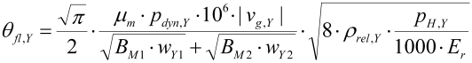

|
|
|


接触温度
在啮合线的每个点上，图形中显示的有效局部温度定义为齿轮基体温度（齿体温度）加上附加的局部升温（闪温）。
在啮合线上的每个点，使用接触分析计算得到的以下数据来计算齿面的闪温：
- 滑动速度
- 小轮和齿轮的切向速度
- 齿面的曲率半径
- 赫兹压力
摩擦系数 μ 取自用于计算啮合线的输入值。齿体温度按照 ISO/TS 6336-22 中的规定进行计算。
闪温的计算如下：
- ISO：依据 ISO/TS 6336-22

- AGMA：依据 AGMA 925，使用公式 84
图形可以在 2D 或 3D 视图中显示。可在 2D 图形属性中选择要显示的剖面图。
Contact temperature
The effective local temperature shown in the graphic at each point in the path of contact is defined by the gear base temperature (the tooth bulk temperature) plus additional local warming (the flash temperature).
At each point on the path of contact, the calculation uses the following data from the contact analysis calculation to calculate the flash temperature on the tooth flank:
- Sliding velocity
- Speed in tangential direction to the pinion and gear
- Curvature radii on the tooth flanks
- Hertzian Pressure
The coefficient of friction μ is taken from the value input for calculating the path of contact. The bulk temperature is calculated as specified in ISO/TS 6336-22.
The flash temperature is calculated for:
- ISO according to ISO/TS 6336-22
- AGMA according to AGMA 925 with Equation 84
The graphic can be displayed in 2D or 3D view. You can select which section is to be displayed, in the 2D graphic's properties.